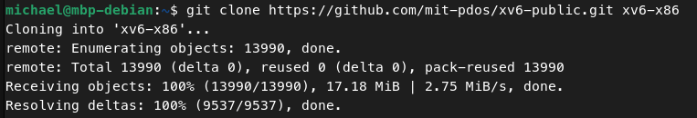
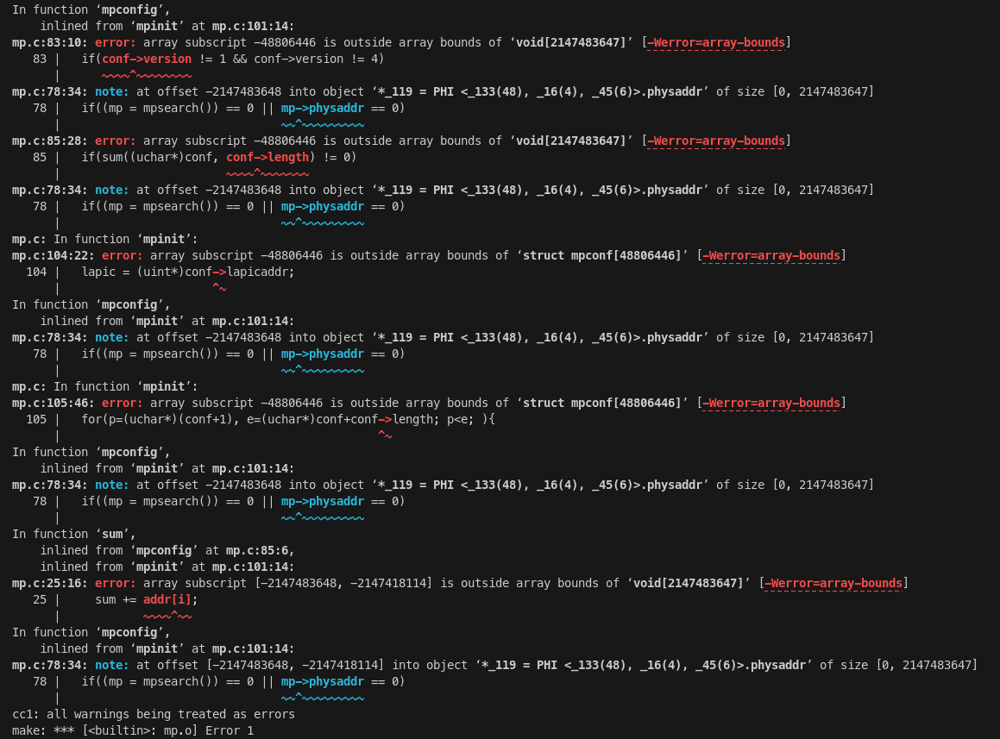
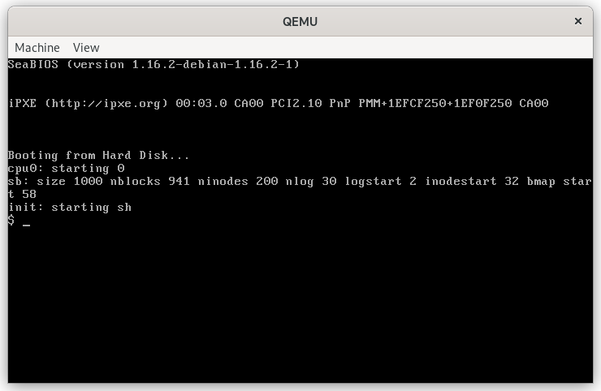
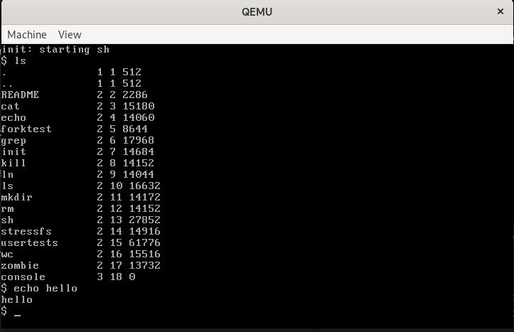

First run of xv6
This post marks the starting point of my journey into the world of operating systems by examining a particular one called xv6.
Xv6 is a teaching operating system developed by the people in MIT. There are two official versions of xv6. It is first developed targeting the x86 architecture, later their effort moves to the development for the new RISC-V architecture. And the original x86 version is no longer under development.
I chose the x86 version simply because I want to know more about the x86 architecture.
Environment to build and run the kernel
I have a Debian 12 system set up on my old Macbook Pro which uses an Intel CPU (Core i5-6287U, dual cores, 4 threads). To build and/or debug the kernel, a compiler toolchain and various other tools (such as Make, GDB) are needed. To run the kernel, I need QEMU. QEMU is a machine emulator which can be used for system emulation and user mode emulation. System emulation provides a virtual model of an entire machine (CPU, memory and emulated devices) to run a guest OS. Obviously, this is what I need. To install QEMU on Debian, just run this command:
sudo apt install qemu-system-x86
Now I describe the steps to build and run the kernel.
Get the source code
I cloned the original repo of xv6 as xv6-x86 to my local machine:

Build
Now, it’s time to build the kernel. Run make inside the root directory of
the cloned repository:

You can see that there is something wrong in the source file mp.c that causes gcc to report errors. Of course the permanent solution is to fix those problems (which look like bugs based on the error descriptions), but now I just want to make sure that the kernel is runable. So the workaround here is to modify the flags passed to gcc. Take a look at the Makefile, you can see that the option-Werror is passed to gcc, so gcc will make all warnings into
errors.
CFLAGS = -fno-pic -static -fno-builtin -fno-strict-aliasing -O2 -Wall -MD -ggdb -m32 -Werror -fno-omit-frame-pointer
Just delete the -Werror option then Make will run quietly:
# CFLAGS = -fno-pic -static -fno-builtin -fno-strict-aliasing -O2 -Wall -MD -ggdb -m32 -Werror -fno-omit-frame-pointer
CFLAGS = -fno-pic -static -fno-builtin -fno-strict-aliasing -O2 -Wall -MD -ggdb -m32 -fno-omit-frame-pointer
Run the kernel
To run the kernel inside qemu, just run the command make qemu:

Wonderful! Despite the problems in the source code, xv6 boots and runs inside qemu. Now let’s try some shell commands.

The ls and echo commands run perfectly! How very exciting!